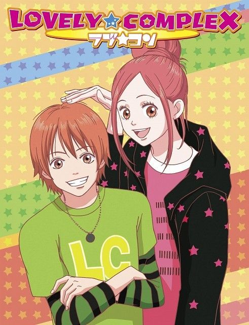
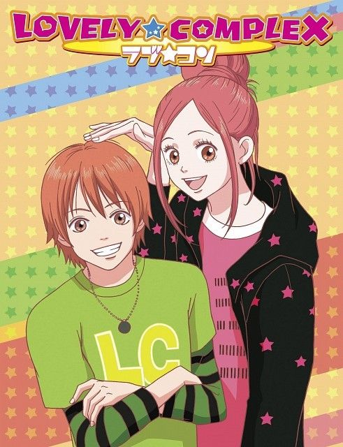
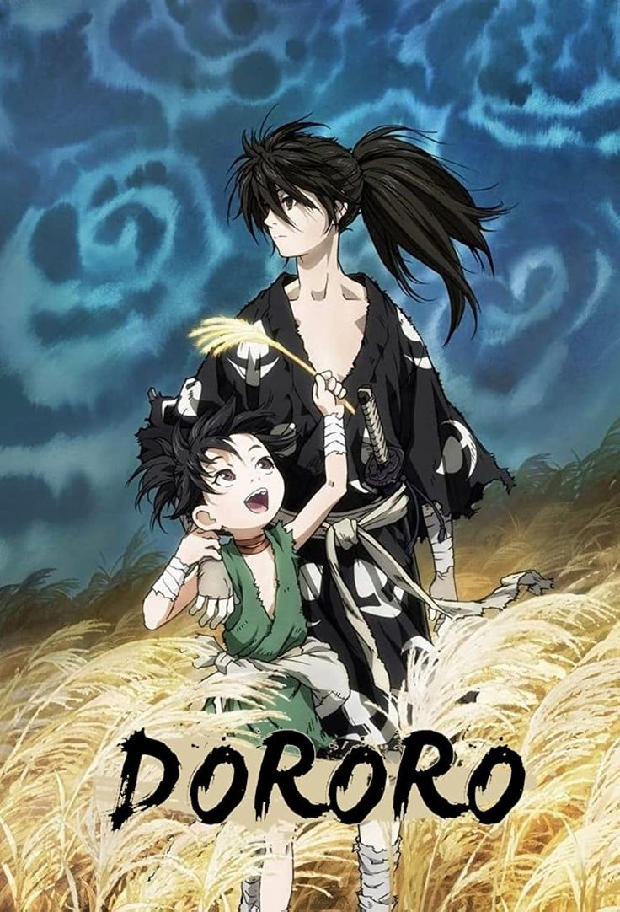
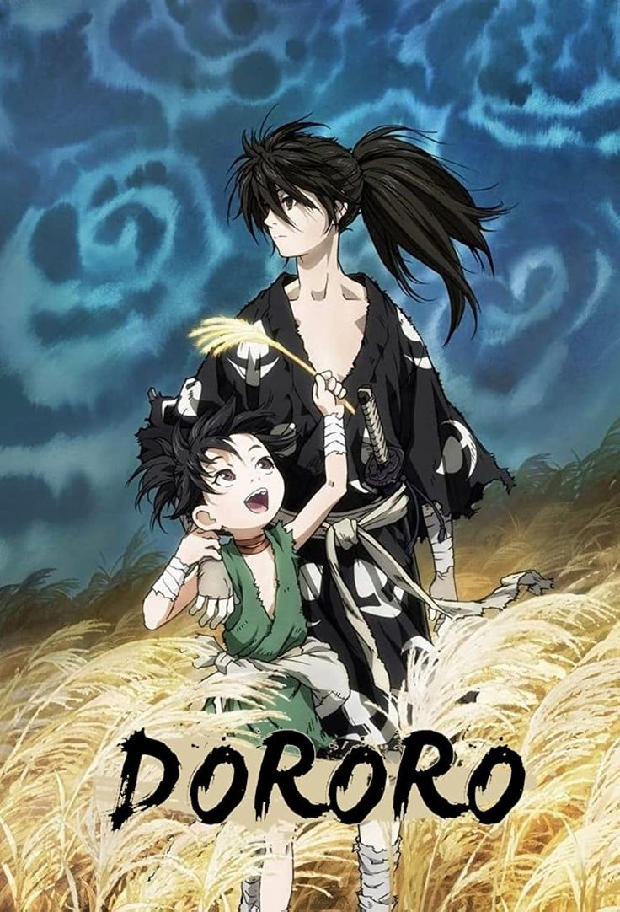
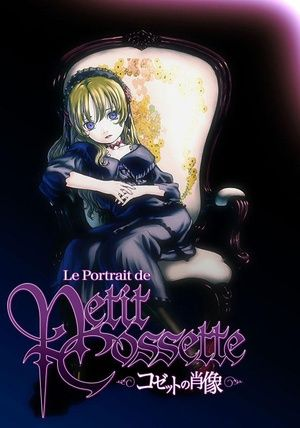
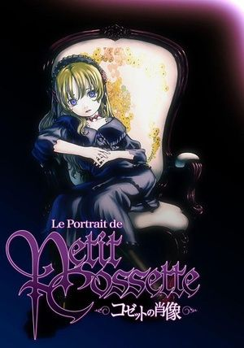
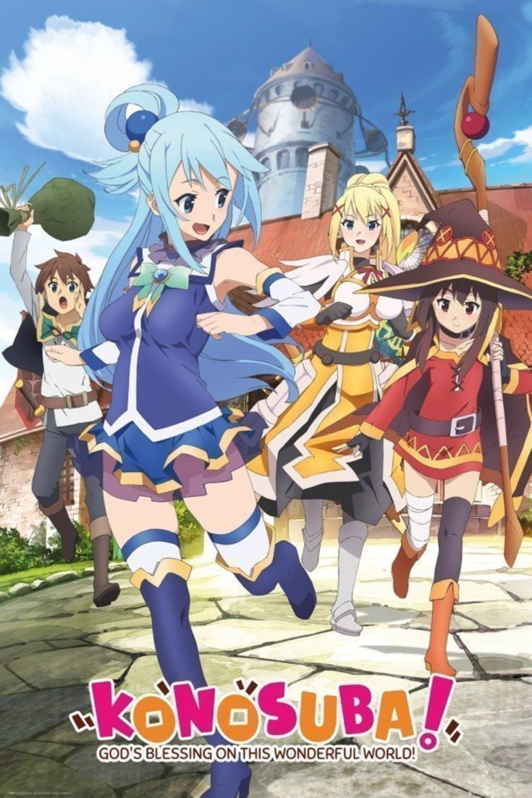
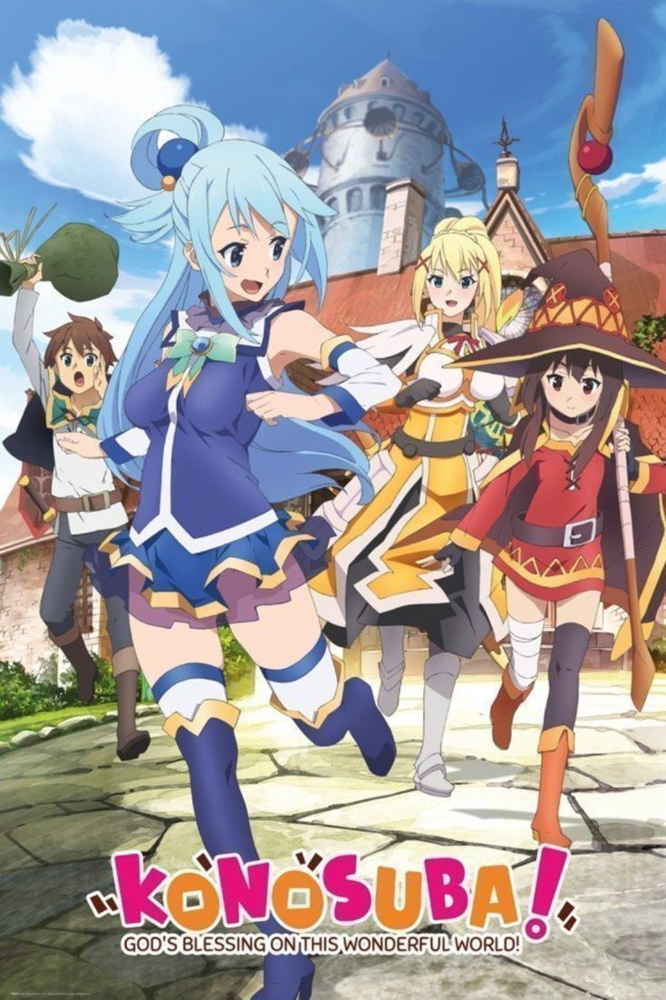

Akira Toriyama espera que Dragon Ball Daima sea un éxito y habla de su compromiso con el anime
El creador de Dragon Ball, Akira Toriyama, espera que el nuevo anime de la franquicia sea un éxito.
Dragon
Ball Daima estrenó su primer tráiler hace unos días causando una fuerte división entre los
seguidores de
la
historia de Goku. Por un lado, están los espectadores emocionados que arden en deseos de poder
experimentar
en sus propias carnes esta nueva aventura de Kakarot con fuertes inspiraciones en Dragon Ball GT, la
serie
no canónica que todavía sigue levantando ampollas. En la otra mano, tenemos al público que no está
demasiado
contento con el rumbo que ha tomado la saga con su infantilización. Toriyama aseguró que no habría
problemas
con este aspecto, porque 'Daima' tendrá batallas épicas. Pero el creador ha ido un poco más allá
asegurando
que está "más metido en esto que de normal".

One Piece: los 9 mejores capítulos de todo el anime
One Piece es uno de los anime más largos de la historia, contando con más de mil episodios que
relatan la
gran historia de los Piratas Sombrero de Paja. Si bien la mayoría de estos capítulos son importantes
para el desarrollo de la trama, algunos han destacado más que otros por los acontecimientos que
presentan durante ese momento.Por ejemplo, hay algunos arcos del manga y anime de One Piece que
muestra
las batallas más épicas de los personajes o ciertos conflictos que son un símbolo de superación para
los
protagonistas de la franquicia. Aunque es una decisión difícil, hemos recopilado algunos de los
mejores
episodios de One Piece en la siguiente información, donde también te explicamos por qué han sido
seleccionados en este top.
Conoce los episodios más impresionantes de One Piece
¡Di que quieres vivir! ¡Somos tus amigos! (Episodio 278)
El dolor de mis compañeros es mi dolor. Zoro preparado para morir (Episodio 377)
¡El cuartel general se derrumba! - ¡Barbablanca enmudecido de ira! (Episodio 484)
¡Acabando el problema! ¡Barbablanca contra los Piratas de Barbanegra! (Episodio 485)
¡Buscando la respuesta! ¡Muere Ace Puño de Fuego! (Episodio 483)
El nacimiento del Rey de los Piratas - ¡La llegada a la última isla! (Episodio 968)
¡Oden no sería Oden si no estuviera hervido! (Episodio 974)
Luffy Sombrero de Paja - El hombre que se convertirá en el Rey de los Piratas (Episodio 1015)
¡El estilo de tres espadas del rey Supremo! Zoro vs. King (Episodio 1062)

Attack on Titan a punto de estrenar el capítulo final: ¿cuándo y dónde verlo?
Se acaba de confirmar cuándo será el esperado estreno de Shingeki no Kyojin último capítulo 2023,
después de meses en que estudios MAPPA solo habían asegurado que llegaría en otoño y luego en
noviembre.
Por fin, el estreno de Attack on Titan THE FINAL CHAPTERS en Latinoamérica, incluyendo México, será
el
próximo viernes 3 de noviembre de 2023 desde la plataforma de streaming de anime favorita:
Crunchyroll.
La primera parte del final de Attack on Titan de la obra de Hajime Isayama fue estrenada en marzo,
tardó
60 minutos, por lo que de no ser verdad lo que dijo el insider, por lo menos, deberá tardar cerca de
una
hora.
Todavía falta que Crunchyroll confirme la hora de estreno del último capítulo de Attack on Titan.

.jpg)
.jpg)
.jpg)


.jpg)


.jpg)
.jpg)
.jpg)
 (HD) [Sub Español] [MEGA].jpg)
.jpg) 



.jpg)
 

.jpg)
.jpg)

.jpg)
.jpg)

 2018 - Meta Galáxia.jpg)

.jpg)

.jpg) 



 



.jpg)

 is a 2019 Japanese animated romantic fantasy film written and directed by Makoto Shinkai_.jpg)
.jpg)
 - Kotaro Tamura.jpg)
.jpg)


.jpg)


.jpg)

.jpg)


.jpg)
.jpg)

 chega em abril.jpg)